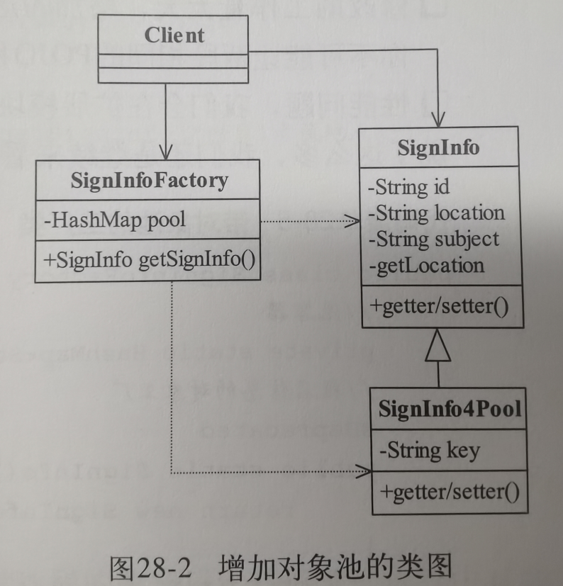
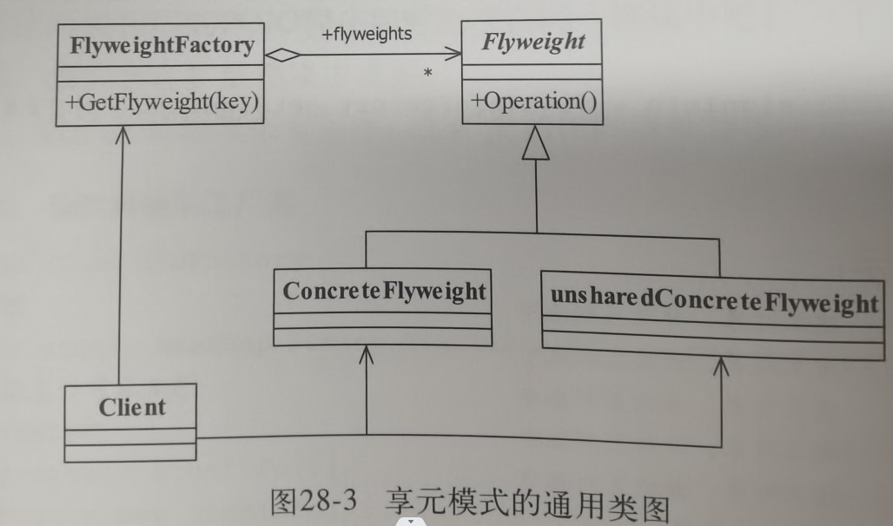

28.享元模式
1.例子引入
SignInfo信息类记录信息
SignInfoFactory信息工厂类创建SignInfo对象
Client客户端通过工厂类来创建信息类
问题:当有大量的对象同时被创建,GC无法快速回收,导致的内存溢出.

增加了对象池对象SignInfo4Pool
我们通过对key值抽象把相同的部分提取出来,仅保留不同的部分作为key,在这里就是考试科目+考试地点是唯一不同的地方,我们的池里面就仅仅用这个来作为区分,科目+地点的数量基本可以算出来是有限的,自然就不会导致内存溢出了
2.正式定义
Use sharing to support large numbers of fine-grained objects efficiently.
翻译:使用共享对象可以有效地支持大量的细粒度的对象.

内部状态:可以共享的信息,不会随着环境改变而改变
外部状态:每个对象不同的统一标识,会不断改变的,独特部分
Flywight抽象享元对象:
定义产品的外部状态和内部状态的接口或实现
ConcreteFlyWeight具体享元角色
参与共享的部分,需要定义内部状态和外部状态的实现
unsharedConcreteFlyweith不可共享的享元角色
特殊标明不能参与享元的角色,通常不出现在享元工厂中
享元工厂对象:如果池中不包含这个外部状态就创建添加到池当中,通过对外部状态的定义来实现控制池的大小.
3.应用和扩展
优点:
可以极大的减少对象的数量
缺点:
造成逻辑复杂,需要分离出内部和外部状态.让内部状态不可变,外部状态唯一作为key
应用:
大量相似对象的场景,需要缓冲池的场景
扩展
通过一个类来定义外部状态,但是性能很差劲..